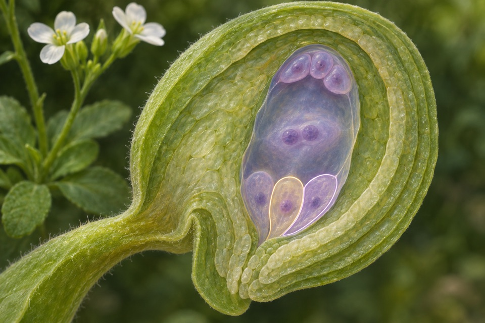
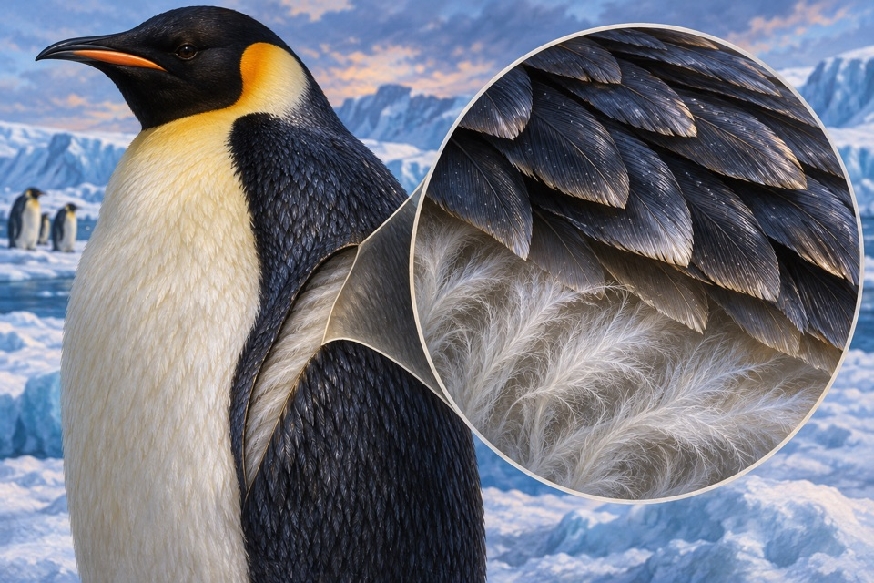
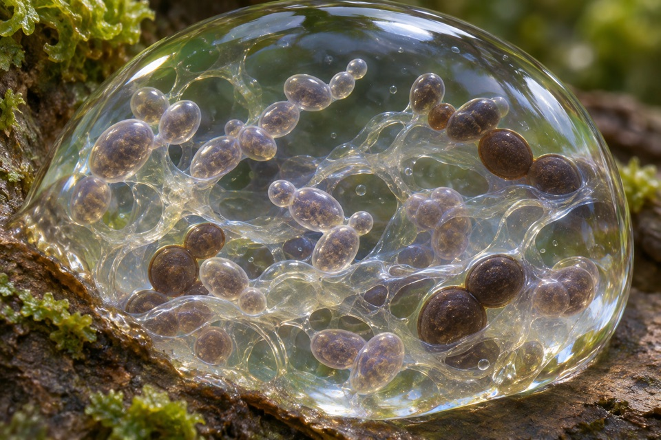
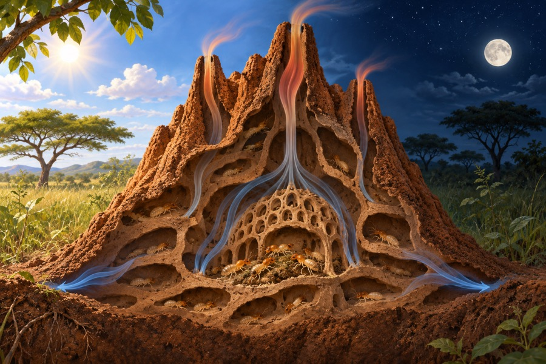
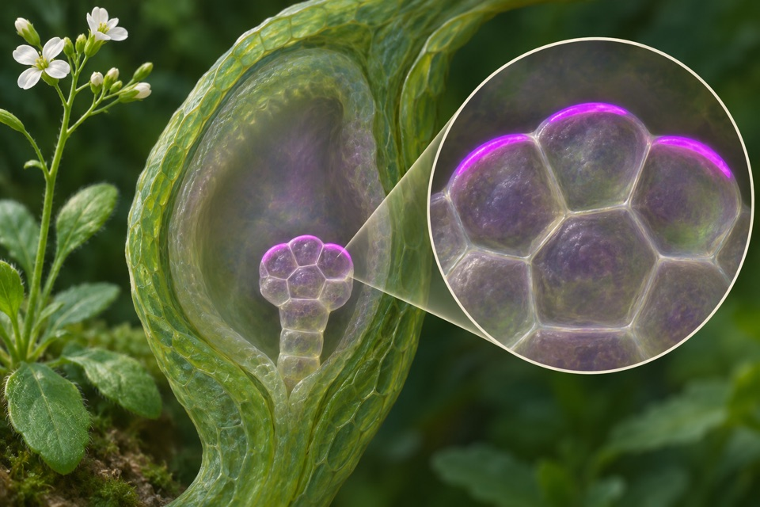

Module 01
Sperm-cell competence for plant gamete fusion
Measure fusion conditional on sperm delivery and contact with the female gametes.
Evidence recordOpen any of the ten modules to see the reported observation, its sources, and the research questions still open.

Measure fusion conditional on sperm delivery and contact with the female gametes.
Evidence record
Measure selective microbial formation of isobutanol from central carbon intermediates.
Evidence record
Follow the position of specified chromosomal loci in live cells.
Evidence record
Measure the distribution and density of distinct body-feather types.
Evidence record
Measure pollen hydration kinetics at the stigma before scoring germination or tube elongation.
Evidence record
Quantify extracellular β-poly(L-malic acid) separately from free malate.
Evidence record
Track membrane-to-cytosol redistribution of a phosphoinositide-sensitive reporter.
Evidence record
Measure flow direction and temperature differences between mound regions over time.
Evidence record
Score the membrane side occupied by PIN1 and its coordination across neighboring embryonic cells.
Evidence record
Distinguish cleavage of poly(cis-1,4-isoprene) from growth on soluble material associated with rubber.
Evidence record